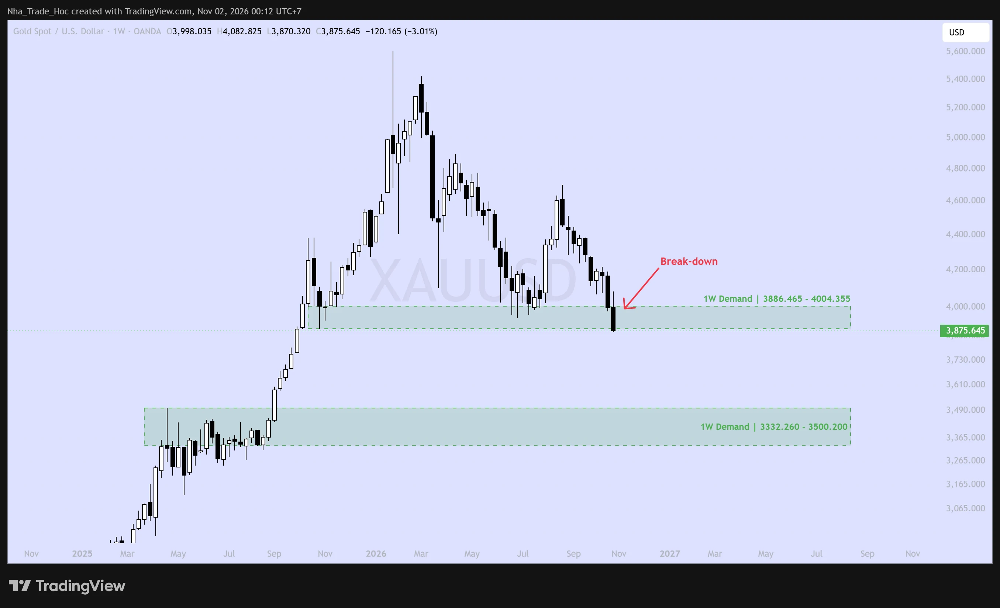
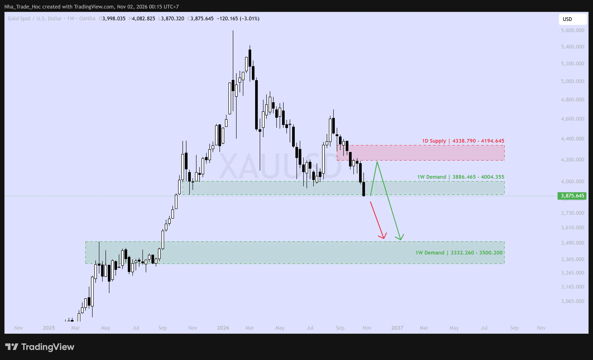
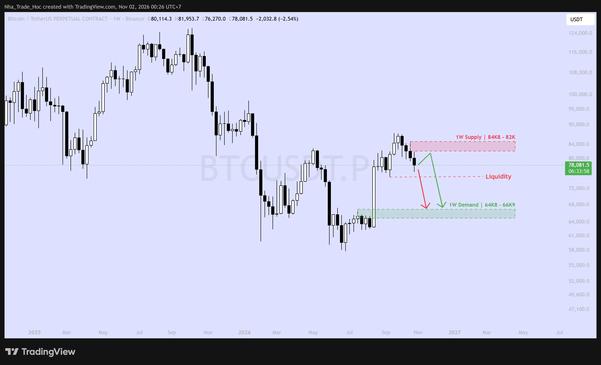

Quy ước: Dữ kiện là số liệu có nguồn, đánh số [n] và liệt kê ở cuối bài; Nhận định là quan điểm và kịch bản của Nhà Trade Học. Số liệu chốt đến ngày 01/11/2026.
Tổng quan hiệu suất tháng 10/2026
Giá đóng cửa 30/09 và 30/10 (Vàng) [23][24]; 30/09 và 31/10 (BTC) [36][37]; Fed [1]. Tỷ lệ BTC/XAU do Nhà Trade Học tự tính.
Mất −7.19%, đóng tháng tại 3,875.52, thấp nhất kể từ tháng 10/2025 [27]. Đây là tháng giảm thứ hai liên tiếp sau −8.5% của tháng 9 [34]. Từ đầu năm: ≈ −10.1% [25]. Giá cách đỉnh lịch sử (~5,600, 29/01/2026) khoảng −31% [26].
Mất −7.33%, đóng tháng tại 77,435. Đây là năm thứ hai liên tiếp tháng 10 đóng đỏ, lần đầu sau hơn 10 năm [39]. Đỉnh tháng ~87,177 (02/10), đáy 76,190 (30/10) [37]. Từ đầu năm: ≈ −11.5% [38].
Tỷ lệ gần như không đổi quanh ~20. Hai tài sản giảm với cùng tốc độ, nên tháng 10 không có dòng tiền chuyển từ BTC sang Vàng như hồi đầu năm. Cả hai cùng bị bán vì một lý do chung: chi phí vốn tăng.
Tháng 10: Dầu tăng, Vàng & BTC cùng giảm
% thay đổi trong tháng 10/2026Cùng kỳ, lợi suất thực 10 năm của Mỹ giảm từ 2.93% xuống 2.63% [13]. Dầu tăng do rủi ro eo Hormuz [15], DXY đi ngang [14]. Vàng giảm dù lợi suất thực hạ, một tín hiệu yếu được phân tích ở mục 2B.
Trọng tâm chiến lược tháng 11/2026
Nhận định Cấu trúc giảm trên khung tuần của cả hai tài sản vẫn còn nguyên. Chiến lược chủ đạo là bán thuận xu hướng. Vốn được chia theo hai kịch bản: (A) giảm thẳng và (B) hồi lên vùng cung rồi giảm tiếp. Nhịp hồi chỉ là khả năng, không phải điều kiện bắt buộc để vào lệnh.
Vàng (XAU/USD)
BÁN THEO XU HƯỚNGLuận điểm: Nến tuần đóng cửa dưới biên dưới vùng Demand 1W 3,886–4,004, tức vùng này đã bị phá. Fed đang thắt chặt, quỹ ETF bị rút ròng và quỹ đầu cơ tiếp tục giảm vị thế mua. Mục tiêu kế tiếp là vùng Demand 1W 3,332–3,500.
Hành động: Bán khi giá hồi về 3,950–4,000 (kịch bản A) hoặc bán tại vùng Supply 1D 4,195–4,339 (kịch bản B). Không bắt đáy.
Bitcoin (BTC/USD)
BÁN THEO XU HƯỚNGLuận điểm: Giá bị từ chối dưới vùng Supply 1W 82,000–84,800. Người nắm ETF đang lỗ (giá vốn ~81.5K), vụ hack Binance làm mất niềm tin, còn stablecoin và dòng tiền ETF cùng co lại. Mục tiêu là quét thanh khoản ~75K, sau đó về vùng Demand 1W 64,800–66,900.
Hành động: Bán khi giá hồi về 78,500–80,000 (kịch bản A) hoặc bán tại 82,000–84,500 (kịch bản B). Giữ tỷ trọng stablecoin cao.
A. Chính sách tiền tệ: Fed của Kevin Warsh
Tác động: Tiêu cực cho cả Vàng và BTC (lãi suất thực cao, USD giữ giá).
- Dữ kiện Tháng 9 tăng, tháng 10 giữ: Ngày 16/09/2026, Fed tăng 25bp lên 3.75–4.00% với tỷ lệ phiếu 12–0 [2]. Ngày 28/10, Fed giữ nguyên lãi suất với tỷ lệ phiếu 10–2; hai thành viên Lisa Cook và Beth Hammack bỏ phiếu muốn tăng thêm 25bp. Tuyên bố nhận định kinh tế "đang mở rộng với tốc độ mạnh" và lạm phát "vẫn ở mức cao" [1].
- Dữ kiện Dot-plot tháng 9: trung vị cuối 2026 là 4.1%, hàm ý còn một lần tăng nữa; trung vị 2027 vẫn ở 4.1% [3]. Chủ tịch Kevin Warsh được Thượng viện phê chuẩn ngày 13/05/2026 (54–45) [4]. Ông không đưa định hướng chính sách trước (forward guidance) và coi lạm phát là rủi ro lớn hơn việc làm [5].
- Dữ kiện Kỳ vọng tháng 12: Theo CME FedWatch (qua Trading Economics), xác suất Fed tăng lãi suất tại cuộc họp 08–09/12 dao động khoảng 72–83% trong hai ngày 29–30/10 [6][7].
- Nhận định Kịch bản tăng lãi suất tháng 12 đã được thị trường phản ánh phần lớn. Vì vậy rủi ro lớn với vị thế bán nằm ở bất ngờ ôn hòa: Fed giữ nguyên lãi suất tháng 12 có thể kích hoạt nhịp hồi mạnh ở cả hai tài sản.
B. Lạm phát, tăng trưởng & thị trường lãi suất
- Dữ kiện Lạm phát do năng lượng: Lạm phát chung (3.7%) cao hơn hẳn lạm phát lõi (2.6%) vì giá xăng tăng +34.2% so với cùng kỳ [8]. Đây là dạng lạm phát chi phí đẩy mà Fed của Warsh chọn xử lý bằng lãi suất.
- Dữ kiện Lợi suất: Lợi suất 10 năm của Mỹ lên đỉnh năm 5.31% ngày 05/10 rồi lùi về 4.98% ngày 29/10 [12]. Lợi suất thực 10 năm (TIPS) lên 2.95% ngày 05/10, cao nhất năm 2026 và cao hơn nhiều so với 1.94% đầu năm, rồi lùi về 2.63% [13]. DXY ở quanh 101.9 và gần như đi ngang trong tháng [14].
- Nhận định Tín hiệu đáng chú ý nhất tháng: lợi suất thực giảm ~30bp, lẽ ra hỗ trợ Vàng, nhưng Vàng vẫn mất 7%. Khi giá không phản ứng với một yếu tố hỗ trợ, đó thường là dấu hiệu bên bán đang chiếm ưu thế về vị thế và dòng tiền (xem mục 3B).
C. Địa chính trị & Năng lượng
Tác động: Hai chiều. Rủi ro tăng giá cho Vàng (trú ẩn), nhưng giá dầu cao nuôi lạm phát, khiến Fed thêm lý do tăng lãi suất.
- Dữ kiện Iran – Vùng Vịnh: Lệnh ngừng bắn tháng 6 đã sụp đổ từ 08/07 [17]. Tháng 10 ghi nhận số vụ tấn công tàu qua eo Hormuz cao nhất kể từ khi bắt đầu theo dõi năm 2017; Houthi tuyên bố đánh trúng nhà máy lọc dầu Ras Tanura (Ả Rập Xê Út) [16]. Giá dầu Brent lên 116.72 USD ngày 23/10, cao nhất 4 năm, và tăng ~10.9% trong tháng [15]. Ông Trump cảnh báo có thể tái không kích sau bầu cử giữa kỳ [15].
- Dữ kiện Nga – Ukraine: Sau cuộc gặp với đặc phái viên Witkoff ngày 21/10, ông Putin đồng ý nối lại đàm phán kỹ thuật ba bên, có thể tại Abu Dhabi từ ngày 10/11 trở đi [18]. Căng thẳng hạ nhiệt nhẹ.
- Dữ kiện Đông Á: Mỹ và Nhật tập trận Keen Sword 27 với khoảng 56,000 quân, quy mô lớn nhất từ trước đến nay (kết thúc 29/10). Trung Quốc điều drone và tàu chiến bám theo [19].
- Nhận định Địa chính trị là rủi ro lớn nhất với vị thế bán Vàng. Leo thang quân sự với Iran sau ngày 03/11 có thể đẩy Vàng hồi mạnh về vùng Supply 1D. Kịch bản B được thiết kế để tận dụng đúng tình huống đó, thay vì bị nó quét lệnh.
D. Chính trị Mỹ & Thương mại
- Dữ kiện Bầu cử giữa kỳ (03/11): Thị trường dự đoán Kalshi (28/10) cho phe Dân chủ 91% khả năng giành Hạ viện và 65% khả năng giành Thượng viện [20].
- Dữ kiện Thuế quan: Thuế Section 301 khoảng 10–12.5% (mức 12.5% áp với Trung Quốc, Việt Nam, Nhật Bản, Hàn Quốc) đã thay thuế Section 122 từ 24/07/2026 và chưa có ngày hết hạn [21]. Ngân sách tạm thời của Chính phủ Mỹ kéo dài đến 11/12/2026 [22].
- Nhận định Một Quốc hội chia rẽ sẽ hạn chế mở rộng tài khóa, có lợi cho trái phiếu dài hạn. Với crypto, khả năng Đạo luật CLARITY được thông qua trong năm 2026 thấp đi (xem mục 4A).
A. Phân tích cơ bản
Lực cản
- Chi phí cơ hội cao: Lãi suất thực 10 năm vẫn quanh 2.6–2.9%, cao hơn khoảng 70–100bp so với đầu năm [13]. Vàng không sinh lãi nên chịu thiệt trực tiếp.
- Fed tăng lãi suất: Vàng giảm mạnh nhất tuần kể từ tháng 6 (≈ −3.5%, tuần đến 23/10) khi số liệu PCE nóng, GDP mạnh và giá dầu tăng cùng củng cố kỳ vọng tăng lãi suất [27].
- Cầu vật chất châu Á yếu: Nhập khẩu vàng của Ấn Độ tháng 9 giảm −81% so với cùng kỳ. Lượng rút vàng tại Sàn Vàng Thượng Hải (SGE) quý 3 giảm −21% [34][33].
Lực đỡ (rủi ro cho vị thế bán)
- Ngân hàng trung ương vẫn mua: Các NHTW mua ròng 39 tấn trong tháng 8, cộng dồn 170 tấn từ đầu năm [32]. Riêng PBoC đã mua 23 tháng liên tiếp; tháng 9 mua 23 tấn, nhiều nhất kể từ 10/2023, đưa tổng dự trữ lên 2,410 tấn [33].
- Mục tiêu của các ngân hàng lớn vẫn cao hơn giá hiện tại: Goldman Sachs hạ dự báo cuối 2026 xuống 4,650 USD nhưng giữ mức 5,400 USD cho 2027 [35].
- Địa chính trị: Rủi ro Iran và eo Hormuz (mục 2C).
Nhận định Cầu vật chất từ các ngân hàng trung ương là lực đỡ dài hạn, giúp đặt đáy cho giá. Nó không đủ để đảo ngược xu hướng ngắn hạn khi dòng tiền đầu cơ và ETF đang rút ra. Lực đỡ này nhiều khả năng xuất hiện rõ ở vùng Demand 1W 3,332–3,500, không phải ở giá hiện tại.
B. Dữ liệu tâm lý & dòng tiền (Sentiment & Positioning)
Báo cáo COT: Quỹ đầu cơ liên tục giảm vị thế mua
Dữ kiện Theo báo cáo COT dạng phân tách (Disaggregated) của CFTC cho Vàng COMEX, chốt ngày 27/10/2026 (công bố 30/10), vị thế mua ròng của nhóm Managed Money như sau [28][29]:
Managed Money net long (hợp đồng), Vàng COMEX. Trục cột bắt đầu từ 0 và tỷ lệ theo mức 29/09.
- Dữ kiện Vị thế mua ròng giảm −14,756 hợp đồng (−12%) trong tháng 10, từ 120,318 xuống 105,562 [28][29]. Tuần cuối có tăng nhẹ (+1,356), nhưng cùng lúc tổng khối lượng mở (OI) giảm −5,469, còn 396,810 hợp đồng [28].
- Dữ kiện Nhóm Swap Dealer giảm 12,256 hợp đồng bán trong tuần [28], cho thấy các nhà tạo lập thị trường đang thu hẹp vị thế phòng hộ cùng lúc với đà giảm.
- Dữ kiện Dòng tiền ETF: Tháng 9, ETF vàng toàn cầu vẫn hút ròng 10 tỷ USD, nâng lượng nắm giữ lên kỷ lục 4,256 tấn [30]. Sang tháng 10 dòng tiền đổi chiều: quỹ SPDR GLD giảm từ ~1,060 tấn (07/10) xuống 1,041 tấn (29/10) [31][26], trong đó riêng ngày 22/10 bị rút 11.98 tấn. Số liệu ETF tháng 10 của WGC chưa được công bố tại thời điểm viết.
- Nhận định Vị thế mua ròng ~105K đang nằm ở 1/3 dưới của biên độ 3 năm. Dư địa thanh lý vị thế mua không còn lớn như hồi tháng 1, nên đà giảm tháng 11 nhiều khả năng chậm hơn và có nhịp hồi xen kẽ thay vì một cú sập. Điều này ủng hộ việc chia vốn cho kịch bản B.
C. Phân tích kỹ thuật
1. Phá vỡ vùng Demand 1W 3,886–4,004
Nến tuần kết thúc 30/10 (O 3,998.0 · H 4,082.8 · L 3,870.3 · C 3,875.6, −3.01%) đóng cửa dưới biên dưới của vùng Demand 1W 3,886.465–4,004.355. Vùng này đã đỡ giá trong các nhịp chỉnh tháng 6–7/2026. Nến đóng cửa sát mức thấp nhất tuần, cho thấy bên bán kiểm soát đến tận phiên cuối.

XAU/USD · 1W · OANDA. Nến tuần đóng cửa dưới vùng Demand 1W (Nhà Trade Học, 02/11/2026)
2. Lưu ý: biên độ phá vỡ còn mỏng
Giá đóng cửa chỉ thấp hơn biên dưới vùng khoảng 11 USD. Một tín hiệu phá vỡ mỏng như vậy có thể bị kéo ngược lên kiểm định lại (retest). Vì thế báo cáo không đặt cược toàn bộ vào kịch bản giảm thẳng.

XAU/USD · 1W. Kịch bản A (đỏ) và B (xanh) với các vùng cung/cầu (Nhà Trade Học, 02/11/2026)
D. Kết luận Vàng
Kịch bản A: Giảm thẳng (ưu tiên). Giá không quay lại được trên 4,004, chỉ hồi kỹ thuật lên 3,950–4,000 rồi tiếp tục giảm về vùng Demand 1W 3,332–3,500.
Kịch bản B: Hồi rồi giảm. Có thể bị kích hoạt bởi địa chính trị hoặc số liệu yếu. Giá hồi lên vùng Supply 1D 4,195–4,339, bị từ chối, rồi quay đầu giảm về cùng vùng mục tiêu.
Hủy kịch bản giảm: nến tuần đóng cửa trên 4,339.
Xác suất là ước lượng chủ quan của Nhà Trade Học, không phải kết quả mô hình định lượng.
A. Phân tích cơ bản
1. Cú sốc niềm tin: vụ hack Binance (29–30/10)
Dữ kiện Binance ước tính tổng tài sản bị ảnh hưởng khoảng 6.3 tỷ USD, trong đó khoảng 3 tỷ USD đã được phong tỏa. Riêng Tether đóng băng ~1.56 tỷ USD và Circle ~0.8 tỷ USD [45][46]. TRM Labs quy vụ việc cho nhóm TraderTraitor (Triều Tiên) với "độ tin cậy cao". Binance cam kết bù toàn bộ thiệt hại bằng quỹ SAFU và tiền của công ty [45]. Ngày 30/10, BTC lập đáy tháng 76,190 [37], và tổng thanh lý toàn thị trường lên ~1.67 tỷ USD, 86% là vị thế mua [43].
2. Dòng tiền tổ chức: ETF rút ròng −515 triệu USD trong tháng 10
Dữ kiện Tháng 10 có 13 phiên vào ròng và 9 phiên rút ròng; hai phiên rút lớn nhất là 30/10 (−643.3M) và 22/10 (−635.5M) [40]. Giá vốn trung bình của người nắm ETF ở khoảng 81.5K, tức giá hiện tại đã nằm dưới mức này [41]. Riêng IBIT vẫn hút tiền, cho thấy dòng tiền đang dồn về quỹ phí thấp chứ chưa có nhu cầu mới thực sự.
3. Bên mua lớn nhất đang chững lại
Dữ kiện Strategy (MSTR) nắm 848,517 BTC với giá vốn trung bình 75,446 USD (25/10). Công ty đã bán 5,552 BTC trong quý 3 để trả cổ tức cổ phiếu ưu đãi và mua lại STRC; từ 01–23/10 chỉ huy động được 58.7 triệu USD từ phát hành cổ phiếu [47].
4. Thanh khoản và pháp lý cùng co hẹp
Dữ kiện Tổng vốn hóa stablecoin USD giảm từ 306.3 tỷ xuống 299.0 tỷ USD trong tháng 10 (−7.3 tỷ) [48]. Thủ tục đưa Đạo luật CLARITY ra thảo luận tại Thượng viện thất bại (49–50) ngày 15/09, và Hạ viện nghỉ họp đến sau bầu cử [50]. Điểm sáng duy nhất: Mt. Gox lùi hạn trả nợ đến 31/10/2027, nên khoảng 34,387 BTC còn trong ví quỹ chưa tạo áp lực bán ngắn hạn [51].
B. Dữ liệu tâm lý & dòng tiền (Sentiment & Positioning)
- Dữ kiện Đòn bẩy phía mua vẫn đông: Funding rate dương suốt từ 03/10. Trong tuần đến 25/10, phí funding mà bên mua phải trả tăng 13%, cùng lúc OI tăng thêm 1 tỷ USD trong khi giá đi xuống [42]. Đây là cấu trúc dễ bị thanh lý dây chuyền nếu giá thủng hỗ trợ.
- Dữ kiện CME (COT, 27/10): Nhóm Leveraged Funds bán ròng 3,979 hợp đồng (~19.9K BTC) nhưng đã giảm 963 hợp đồng trong tuần; nhóm Asset Managers mua ròng 2,754 hợp đồng (~13.8K BTC) và giảm 245 [44]. Các tổ chức đang giảm cả hai phía, chưa có nhu cầu mua mới.
- Dữ kiện On-chain: Giá vốn của nhóm nắm giữ ngắn hạn (STH cost basis) ở 75.8K; True Market Mean ở 77.9K. Nhóm STH còn một cụm giá vốn lớn quanh 64K từ đáy năm 2026. Khoảng 4 triệu BTC của nhóm nắm giữ dài hạn có giá vốn 85–118K, tạo nguồn cung chờ bán phía trên [41].
- Nhận định Vùng 75–76K là nơi nhiều mốc giá vốn hội tụ: STH (75.8K), Strategy (75.4K) và đường thanh khoản trên biểu đồ. Nếu vùng này thủng, khoảng trống giá vốn kéo dài đến cụm 64K, trùng với vùng Demand 1W 64.8–66.9K.
C. Phân tích kỹ thuật
Bị từ chối tại vùng Supply 1W: Sau cú bật tháng 8, BTC lên tới vùng 87K nhưng không giữ được. Ba nến tuần gần nhất đóng cửa dưới vùng Supply 1W 82,000–84,800, khớp với vùng kháng cự 84–85K mà Glassnode ghi nhận đã đẩy giá xuống nhiều lần trong năm [41]. Đáy tháng 9 tạo ra một vùng thanh khoản (Liquidity) quanh ~75K, nơi tập trung lệnh dừng lỗ của các vị thế mua.

BTCUSDT.P · 1W · Binance. Supply 82K–84.8K, Liquidity ~75K, Demand 64.8K–66.9K (Nhà Trade Học, 02/11/2026)
D. Kết luận Bitcoin
Kịch bản A: Giảm thẳng (ưu tiên). Giá hồi yếu lên 78.5–80K, sau đó quét vùng thanh khoản ~75K. Khi STH cost basis 75.8K bị phá, các vị thế mua bị thanh lý dây chuyền và giá về vùng Demand 1W 64,800–66,900.
Kịch bản B: Hồi rồi giảm. Có thể bị kích hoạt bởi việc Binance khắc phục xong sự cố, đợt ép bán khống (short squeeze) trên CME, hoặc Fed bất ngờ ôn hòa. Giá hồi lên vùng Supply 1W 82,000–84,800, bị từ chối dưới giá vốn của nhóm nắm giữ dài hạn, rồi quay đầu giảm.
Hủy kịch bản giảm: nến tuần đóng cửa trên 84,800. Glassnode coi các phiên đóng cửa ngày trên 85K là dấu hiệu đầu tiên của lực cầu phục hồi [41].
Xác suất là ước lượng chủ quan của Nhà Trade Học. BTC chưa thủng mốc 75.8K nên kịch bản B được đánh giá cao hơn so với Vàng.
A. Ma trận kế hoạch tháng 11
Vốn dành cho mỗi tài sản được chia theo xác suất của từng kịch bản. Phần dự phòng 15% không dùng đến, để dành cho tình huống hủy kịch bản hoặc vào lại lệnh. Mức rủi ro của mỗi lệnh không vượt quá 1% tài khoản.
SL đặt trên đỉnh tuần 4,082.8. Nếu giá thủng 3,850 mà không hồi lên vùng vào lệnh, không đuổi giá; chờ nhịp hồi trên khung H4.
SL đặt trên biên trên vùng Supply 1D (4,338.8). Nên chờ tín hiệu từ chối trên khung H4/D1, ví dụ nến rút râu trên hoặc nến nhấn chìm giảm.
Nếu nến D1 đóng cửa dưới 75.8K (STH cost basis), có thể gia tăng vị thế khi giá hồi kiểm định lại vùng 76–77K, với SL riêng trên 78.5K.
SL đặt trên đỉnh tháng 10 (~87.2K). Có thể chia lệnh thành 2–3 phần trong vùng thay vì đặt một lệnh duy nhất.
R:R tính theo giá vào lệnh trung bình của vùng. Vàng: tham chiếu giá XAU/USD spot (OANDA). BTC: tham chiếu BTCUSDT Perpetual (Binance). Chênh lệch giá giữa các sàn có thể làm mức khớp lệnh thực tế khác đi.
B. Phân bổ vốn & quy tắc quản trị rủi ro
Nếu cả hai kịch bản đều chạm SL, tổng lỗ tối đa là 4% tài khoản.
- Công thức khối lượng: Khối lượng = (Vốn × % rủi ro) ÷ |Giá vào − SL|. Ví dụ: tài khoản 10,000 USD, rủi ro 1% = 100 USD. BTC kịch bản A vào 79,250, SL 82,300 (cách 3,050 USD), suy ra khối lượng ≈ 0.033 BTC (~2,600 USD giá trị danh nghĩa).
- Đòn bẩy thực tế ≤ 3x. Mức lỗ đã được khống chế bằng SL, không phải bằng đòn bẩy cao.
- Chốt 50% tại TP1 và dời SL về điểm hòa vốn. Phần còn lại giữ đến TP2 hoặc đến khi xuất hiện tín hiệu đảo chiều.
- Không bắt đáy trước khi giá chạm vùng Demand 1W và có xác nhận đảo chiều (nến tuần rút chân dài hoặc đóng cửa lấy lại vùng).
- Người nắm giữ dài hạn: không cần bán tháo phần vàng vật chất hoặc BTC giữ dài hạn. Có thể dùng chính các vùng vào lệnh ở trên để phòng hộ một phần.
C. Điều kiện hủy bỏ & tình huống ngược dự báo
Vàng đóng nến tuần trên 4,339
Hệ quả: vùng Supply 1D bị phá, tín hiệu breakdown tuần trước trở thành bẫy giảm giá.
Hành động: đóng toàn bộ vị thế bán và chuyển sang trung lập. Theo dõi khả năng giá quay lại vùng 4,600–4,700.
BTC đóng nến tuần trên 84,800
Hệ quả: cầu ETF và nhóm nắm giữ dài hạn quay lại, cấu trúc chuyển sang đi ngang biên độ rộng.
Hành động: dừng bán khống. Chỉ cân nhắc mua khi giá kiểm định lại 82–84.8K thành công.
D. Lịch sự kiện trọng yếu tháng 11
Không mở lệnh mới trong khoảng ±30 phút quanh giờ công bố NFP và CPI, và trong đêm kiểm phiếu 03–04/11.
Nguồn tham khảo (truy cập 01–02/11/2026)
- Federal Reserve – FOMC statement, 28/10/2026
- Federal Reserve – FOMC statement, 16/09/2026
- Federal Reserve – Summary of Economic Projections, 16/09/2026
- Scotsman Guide – Senate confirms Warsh to replace Powell as Fed chair
- investingLive – Warsh speaks in Bangkok after hot CPI, 15/10/2026
- Trading Economics – US 10Y yield / FedWatch December odds, 29–30/10/2026
- Federal Reserve – Calendar, December 2026
- BLS – Consumer Price Index, September 2026 (14/10/2026)
- BEA – Personal Income and Outlays, September 2026 (29/10/2026)
- BLS – Employment Situation, September 2026 (02/10/2026)
- BEA – GDP Q3 2026 advance estimate (29/10/2026)
- FRED – 10-Year Treasury Constant Maturity (DGS10)
- FRED – 10-Year TIPS real yield (DFII10)
- Trading Economics – US Dollar Index
- Trading Economics – Brent crude oil
- Nation Thailand – Iran war update, 28/10/2026
- Wikipedia – 2026 Iran war ceasefire
- bdnews24 (Reuters) – Putin agrees to resume trilateral technical talks
- DD India – Keen Sword 27
- Kalshi – 2026 midterm predictions, 28/10/2026
- BorderBuddy – Section 122 is out, Section 301 is in
- AACOM – Continuing resolution through 11/12/2026
- PriceGold.net – Gold price, September 2026
- PriceGold.net – Gold price, October 2026
- BullionVault – Gold ends 2025, 31/12/2025
- FXEmpire – Gold stalls near 4,012 / SPDR holdings, 26/10/2026
- Trading Economics – Gold news, 30/10/2026
- CFTC – Disaggregated COT, 27/10/2026
- CFTC – Disaggregated COT, 29/09/2026
- World Gold Council – Gold ETF flows, September 2026
- Cbonds – SPDR Gold Trust holdings
- World Gold Council – Central bank statistics, August 2026
- World Gold Council – China gold market update, 15/10/2026
- World Gold Council – India gold market update, 20/10/2026
- investingLive – Goldman trims end-2026 gold forecast, 23/09/2026
- StatMuse – Bitcoin price, 30/09/2026
- StatMuse – Bitcoin price, October 2026
- Mitrade (BeInCrypto) – Bitcoin Q3 recap, 01/10/2026
- Stocktwits – Back-to-back losing Octobers, 17/10/2026
- TFTC – Bitcoin ETF flows, October 2026
- Glassnode – The Week On-chain, Week 43/2026
- Glassnode – BTC Market Pulse, Week 44/2026
- TokenPost – October liquidations, 01/11/2026
- Tradingster – CFTC TFF, CME Bitcoin, 27/10/2026
- Forbes – Binance says $6.3 billion impacted in record crypto hack, 30/10/2026
- TechCrunch – Binance pauses withdrawals, 29/10/2026
- SEC EDGAR – Strategy Inc. 8-K exhibit, 29/10/2026
- DefiLlama – Stablecoins market cap
- Alternative.me – Crypto Fear & Greed Index
- Decrypt – CLARITY Act fails Senate hurdle, 15/09/2026
- Blockhead – Mt. Gox extends repayment deadline to 10/2027
- BLS – Release schedules (CPI, Employment Situation)
- BEA – Release schedule
- CFTC – COT release schedule
- FN News – APEC Shenzhen
- CryptoTicker – Bitcoin options expiry 30/10/2026
Biểu đồ kỹ thuật: Nhà Trade Học trên TradingView (OANDA XAU/USD, Binance BTCUSDT.P), 02/11/2026. Các con số tỷ lệ BTC/XAU, % thay đổi YTD, R:R do Nhà Trade Học tính từ nguồn trên.
Tuyên bố miễn trừ trách nhiệm (Disclaimer)
Báo cáo này chỉ có mục đích tham khảo và giáo dục. Đây không phải lời khuyên hay khuyến nghị đầu tư. Các kịch bản, xác suất và vùng giá là quan điểm phân tích của Nhà Trade Học tại thời điểm phát hành và có thể thay đổi. Giao dịch có đòn bẩy (CFD, hợp đồng tương lai, crypto) có rủi ro mất vốn cao; nhà đầu tư tự chịu trách nhiệm về quyết định giao dịch của mình.